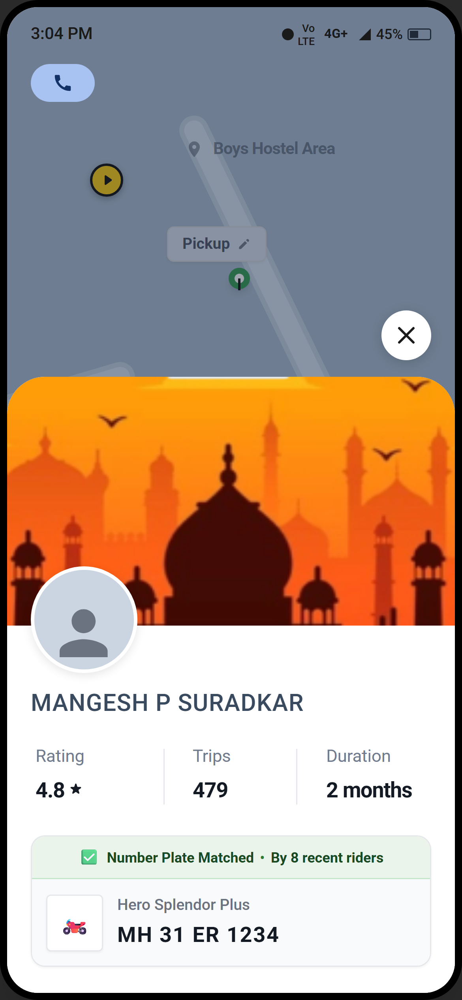
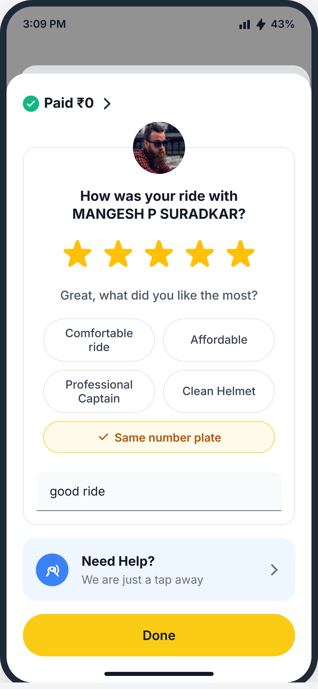
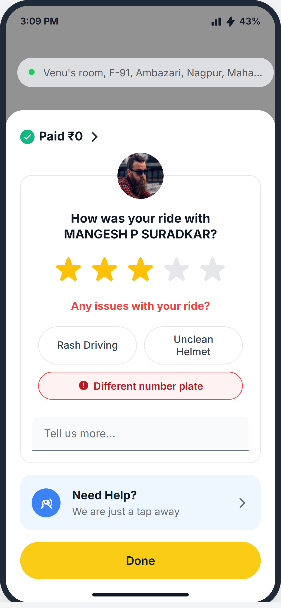
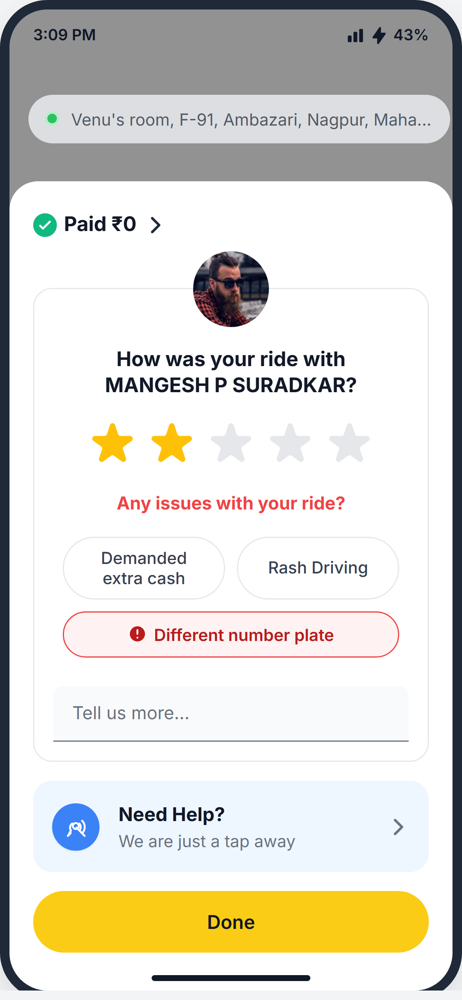
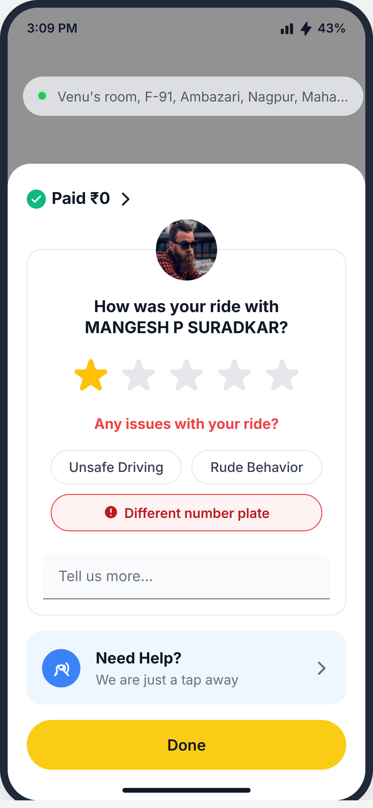

The Rapido Trust Gap: The Hidden Anxiety Between Booking and Boarding.
A Product Case Study on solving 'Black-Box Anxiety' to increase User Retention.

Defining the Business Goal
Setting the strategic direction, prioritization, and metrics for the entire product teardown.
Passengers experience high anxiety immediately upon matching due to fear of unregistered or mismatched vehicles. Zero upfront verification triggers acute distrust.
Users don't cancel instantly, but wait in suspense wondering who and what vehicle will actually arrive, acting as their own manual QA filter.
By establishing trust before the Captain arrives, we aim to decrease manual cancellations in the first 3 minutes, directly lifting Day-1 Retention and stopping ARPU bleed.
Understanding the real users' friction points
We isolated two high-value segments actively abandoning the platform.
The Journey Map: Initial Frictionless Flow
The early funnel is incredibly smooth. Users seamlessly open the app and set a destination.


The Journey Map: Waiting for Captain
The allocation process begins. Emotion remains neutral as the system searches.


The Journey Map: The 'Happy Path' Completion
For users who survive the allocation wait, the core service delivers flawlessly.


Core Problems Affecting Retention & Trust
Empirical research and user sentiment analysis revealed 6 critical failure points across the booking and ride lifecycle.
Ruthless Prioritization: The Trust Bottleneck
We mapped the core problems against our Business Goal. Only one survives the filter.
Brainstorming & Solution Rationale
We mathematically scored 4 potential solutions using the Impact-Effort-Confidence framework to find the one that eliminates anxiety with minimal engineering cost.
| Solution | Impact (1-5) |
Confidence (1-5) |
Effort (1-5) |
Total Score |
|---|---|---|---|---|
| Per-Ride Visual Handshake: Require captains to submit proof of the original vehicle immediately after accepting a ride, before they can navigate to the user. | 5 | 4 | 5 | 4.0 |
| Daily Bike Selfie: Captains must visually verify their original bike via camera before starting their daily shift. | 4 | 4 | 5 | 3.2 |
| Two-Way Declaration & Penalty: Captain self-declares bike status upfront. If the User's post-ride review contradicts the Captain's declaration, the Captain faces a micro-penalty credited to the User. | 3 | 3 | 2 | 4.5 |
|
⭐
Social Proof &
Penalty Loop:
Display a pre-ride social proof score (e.g., "6/15
riders confirmed original
bike") to instantly ease user anxiety, followed by a
frictionless post-ride
survey. A "Yes" increases the captain's social proof
counter for future rides,
while a first "No" freezes their score and issues a
strict warning. A second
"No" triggers ongoing micro-penalties on future earnings
until the captain
physically re-verifies their vehicle at an offline
Rapido hub.
|
5 | 4 | 2 | 10.0 |
The Solution Wireframes: 'The Safety Engine'
Replacing 'Black-Box Anxiety' with progressive Social Proof. Here is how the UI dynamically changes to guarantee trust.

"Plate matched by 8 recent riders"




System Logic: The Self-Regulating Dual-Loop
This is not just a UI change; it is an economic feedback engine. It reinforces positive social proof while gracefully correcting bad actors without choking driver supply.
Measuring Success: Did We Actually Move the Needle?
We don't just ship features; we measure causal business impact. Here is our rigorous data framework to measure safety and conversion outcomes.
[Slide X Content Area]
Placeholder